Honneur
Agir avec droiture, tenir sa parole et faire de l’épée un instrument de protection plutôt que de domination.

Royaume de Vanloria · Vanlorien(ne)
Présentation et organisation
Bien avant que le ciel ne se fende et que le monde ne s’effondre, Vanloria était l’un des royaumes les plus prospères et respectés du continent. La Couronne incarnait l’idéal chevaleresque : l’honneur, la loyauté et la justice guidaient les lois autant que la conduite des hommes.
Les chevaliers n’étaient pas seulement des guerriers, mais les protecteurs du peuple et les gardiens de l’ordre. L’élégance des armures, la rigueur des traditions et la solennité des institutions traduisaient un respect profond pour les codes anciens et les serments sacrés.
Sous cette grandeur vivait une exigence constante : maintenir l’équilibre entre pouvoir et devoir. La Couronne ne gouvernait pas uniquement par la force, mais par la légitimité, l’écoute du Conseil et la conviction que toute puissance devait servir l’unité du royaume.

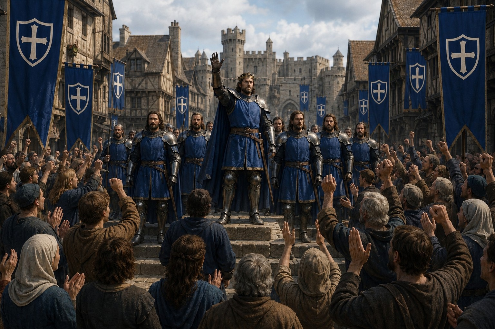
Un royaume florissant
De vastes plaines fertiles s’étendaient entre les montagnes orientales et les forêts anciennes de l’ouest. Les champs de blé ondulaient comme une mer d’or, les cités étaient pavées de pierre blanche et les forteresses dominaient les collines.
Les villes formaient des centres d’artisanat, de commerce et d’enseignement. Les forgerons produisaient des armures réputées dans tout le continent, tandis que les académies formaient guerriers, stratèges, scribes et diplomates.
Agir avec droiture, tenir sa parole et faire de l’épée un instrument de protection plutôt que de domination.
Servir la Couronne, le royaume et ses compagnons avec constance, même lorsque le devoir impose des choix difficiles.
Placer la sécurité du peuple et l’avenir de Vanloria au-dessus de son intérêt personnel.
Pouvoir, devoir et justice
Vanloria était une monarchie féodale structurée, plus raffinée que nombre de ses voisines. Le souverain détenait l’autorité ultime, mais la stabilité reposait sur une chaîne de responsabilités clairement définie.
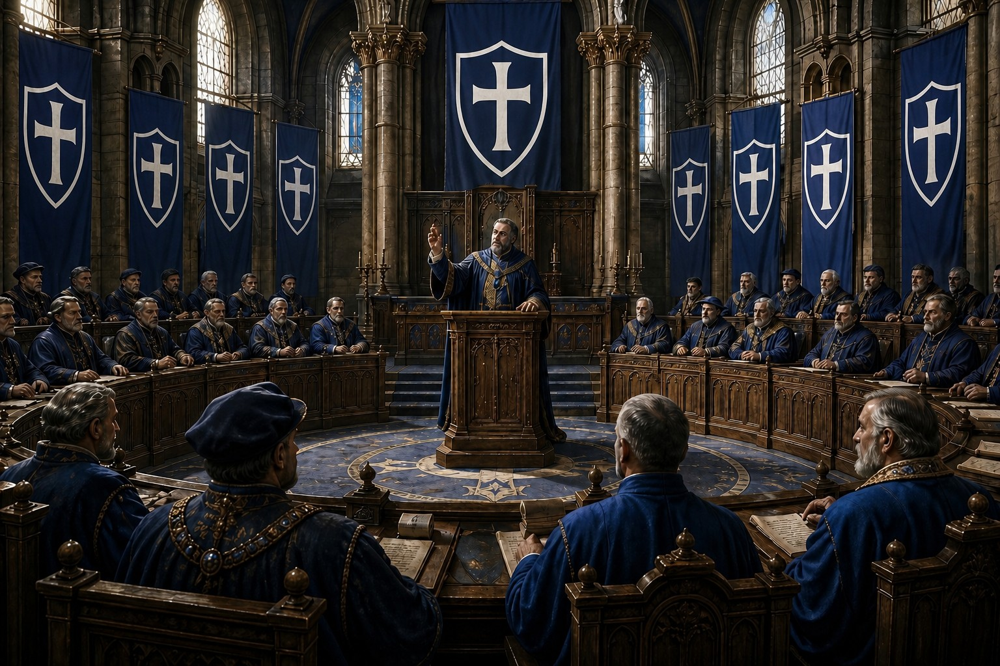
Vanloria est une monarchie féodale structurée. Le souverain, considéré comme choisi par la volonté divine, détient l’autorité militaire suprême, le droit de lever les armées et la maîtrise des alliances. Son pouvoir demeure toutefois lié au devoir et éclairé par le Conseil.
Nobles, stratèges, érudits et représentants des grandes cités débattent des lois et conseillent directement le souverain. L’équilibre entre l’autorité royale et la réflexion collective constitue l’une des forces les plus durables du royaume.
Cette élite militaire recrute selon le mérite et la valeur au combat. Dirigée par un Grand Maître, elle réunit écuyers et chevaliers confirmés autour d’un code strict de fidélité, d’honneur et de protection. Un paysan d’une bravoure exceptionnelle peut, rarement, y être adoubé.
Infanterie professionnelle, cavalerie, archers, ingénieurs et unités logistiques sont répartis en compagnies, bataillons et régiments. Cette organisation permanente permet à la Couronne de répondre rapidement aux menaces extérieures comme aux crises intérieures.
La Cour Royale et les tribunaux provinciaux appliquent le Code de Vanloria sous l’autorité du Grand Juge. Les lois sont strictes mais codifiées : elles doivent protéger les sujets et maintenir l’ordre, jamais semer la peur.
Hiérarchie sociale
Souverain sacré, garant de l’unité nationale et détenteur de l’autorité suprême.
Chef des armées et responsable de la défense du royaume.
Grand noble et gouverneur local chargé d’administrer les terres de la Couronne.
Gardien de l’administration, des lois et des archives du royaume.
Autorité de la foi et protecteur des traditions religieuses.
Représentant du commerce, de l’artisanat et des corporations.
Citoyen, artisan, cultivateur ou marchand : le cœur vivant de Vanloria.
Rangs militaires
Officiers de terrain responsables de la discipline et du commandement des unités.
Élite légendaire, à la fois militaire et sacrée, liée par le Serment d’Argentor.
Cavalier et soldat d’élite, choisi pour sa valeur, son mérite et sa loyauté.
Soldat professionnel formant le cœur discipliné de l’armée régulière.
VolTravail forcé ou compensation envers la victime.
TrahisonExil définitif ou exécution selon la gravité des faits.
MeurtreJugement devant un tribunal royal ou, dans certains cas, duel judiciaire.
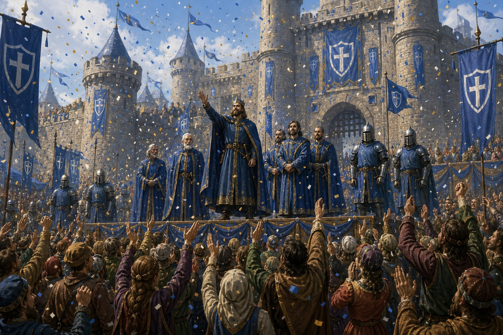
L’âge d’or avant la chute
Frontières sûres, alliances solides, supériorité militaire et croissance démographique nourrissaient une confiance immense. Lorsque tremblements, éclipses et tempêtes apparurent, Vanloria crut pouvoir tout affronter. Le royaume ignorait encore que le monde lui-même allait changer.
Histoire et fondations
Quatre livres rassemblent les événements transmis par la Couronne. Ouvrez chaque archive pour lire le récit complet sans perdre le fil de la grande chronologie.
De l’unification des seigneuries à l’édification d’Aureval, Vanloria devient un État stable dont les institutions survivront à des siècles de crises.
Avant Vanloria, l’ouest était partagé entre des seigneuries rivales. Les querelles de succession, les pillages et les guerres de territoire empêchaient toute paix durable. Aldric, fils d’un capitaine de garnison tombé au combat, s’imposa non par son sang mais par son talent de stratège et la confiance de ses hommes.
Lorsqu’une armée venue du nord menaça toutes les terres divisées, il convainquit les seigneurs de combattre sous un commandement unique. À la Bataille des Trois Collines, sa connaissance du terrain et la discipline de ses troupes brisèrent l’invasion. Les chefs réunis lui jurèrent fidélité et le proclamèrent premier roi de Vanloria.
Aldric sécurisa les routes, consolida les frontières et transforma une alliance de circonstance en royaume. Son couronnement ouvrit une ère nouvelle où l’unité devenait la première défense du peuple.
« Tant que cette lame tiendra droite, Vanloria ne pliera pas. »
Petit-fils d’Aldric, Théodran hérita d’un royaume uni en apparence mais encore fragile. Il fit élever des forteresses le long des frontières, promulgua les premières lois communes et créa le Haut Conseil afin d’associer les grandes maisons, les conseillers et le clergé au gouvernement.
Plusieurs familles nobles contestèrent ces réformes et quelques rébellions furent rapidement réprimées. Parallèlement, de nouvelles routes, des marchés et des villes fortifiées rapprochèrent les provinces. Cette période donna à Vanloria les fondations politiques, militaires et administratives d’un véritable État.
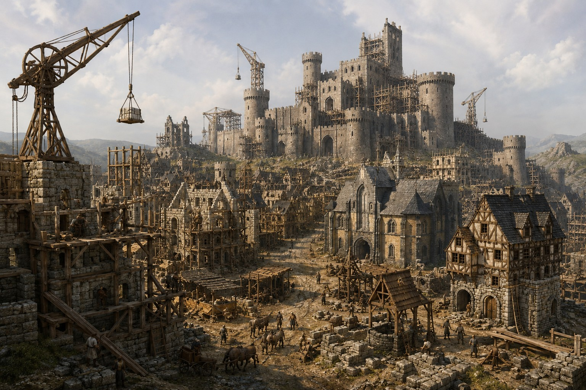
La Couronne choisit les collines bordant le fleuve Argen pour bâtir une capitale à la hauteur du royaume. Pendant plus de trente ans, des milliers d’ouvriers, d’artisans et de chevaliers élevèrent des murailles de pierre blanche, des places, des cathédrales et de vastes marchés.
Protégée par son relief et enrichie par les échanges, Aureval devint rapidement la plus grande ville de Vanloria. Ses murailles lumineuses, visibles à des kilomètres, lui valurent le surnom de Cité Blanche.
Après la mort du roi Tarion, plusieurs seigneurs frontaliers se rebellèrent tandis que les clans de Drakenvald attaquaient le nord. Théodan II convoqua les ordres chevaleresques et des milliers de chevaliers partirent sous la bannière bleue.
Le siège de Fort Aerion et la bataille du Pont Rouge furent marqués par une extrême brutalité. Kael de Ravaryn, surnommé l’Épée de l’Aube, mena les armées royales jusqu’au Traité de Nareth, qui repoussa les ennemis au-delà des montagnes et rétablit l’autorité de la Couronne.
Sous Tarion, une forteresse gigantesque fut construite au centre de la capitale. Palais royal, archives, quartiers de la garde d’élite et grande salle des serments furent réunis derrière ses murs.
Tours de guet, portes renforcées et défenses successives donnèrent à la citadelle une réputation d’invincibilité. Pendant des siècles, elle demeura le centre politique, administratif et militaire de Vanloria.
Eronde II ordonna la construction d’un immense pont de pierre sur le fleuve d’Aster. Des milliers d’ouvriers et d’ingénieurs travaillèrent plus de dix ans malgré les accidents et les crues qui détruisirent plusieurs sections.
L’ouvrage achevé facilita les déplacements militaires, stimula le commerce et permit l’essor de nouvelles villes le long du fleuve. Il reste l’une des plus grandes réalisations de l’ingénierie vanlorienne.
Face aux guerres, aux révoltes et aux créatures des régions sauvages, Darien Ier et le Haut Conseil fondèrent un ordre d’élite chargé de défendre le peuple, l’honneur de la Couronne et les traditions du royaume.
Après des années d’entraînement militaire et spirituel, les recrues prêtaient le Serment d’Argentor. Leurs armures blanches ornées d’or et la croix argentée devinrent les symboles d’une élite respectée bien au-delà des frontières.
Le roi Aldaric fit édifier sur les falaises orientales une forteresse destinée à protéger les routes royales et à résister aux plus grandes invasions. Murailles épaisses, tours gigantesques et portes renforcées en firent l’un des bastions les plus redoutés du continent.
Lors de l’inauguration, les Paladins bénirent les défenses et les armées défilèrent devant la noblesse. Au coucher du soleil, Aldaric proclama la forteresse Bouclier éternel de la Couronne.
Vanloria affronte les puissances voisines, protège ses frontières et découvre que l’honneur peut aussi transformer d’anciens ennemis en alliés.
Après cinq années d’affrontements en mer d’Azur, Vanloria et la République d’Erythros signèrent un traité garantissant des routes commerciales sûres et la libre circulation des navires marchands.
Les érudits erythroyens furent accueillis dans les académies de Vanloria tandis que nobles et savants vanloriens étudièrent dans les cités d’Erythros. Cette paix ouvrit un premier âge d’or économique et culturel.
Une armée étrangère tenta de franchir la rivière Argent pour atteindre le cœur du royaume. Les chevaliers se rassemblèrent sur l’unique passage sûr et jurèrent de défendre le pont coûte que coûte.
Après plusieurs jours d’assauts et malgré leur infériorité numérique, ils tinrent jusqu’à l’arrivée des renforts. L’ennemi, pris entre les deux forces, dut battre en retraite. Le pont devint un symbole de courage, de loyauté et de sacrifice.
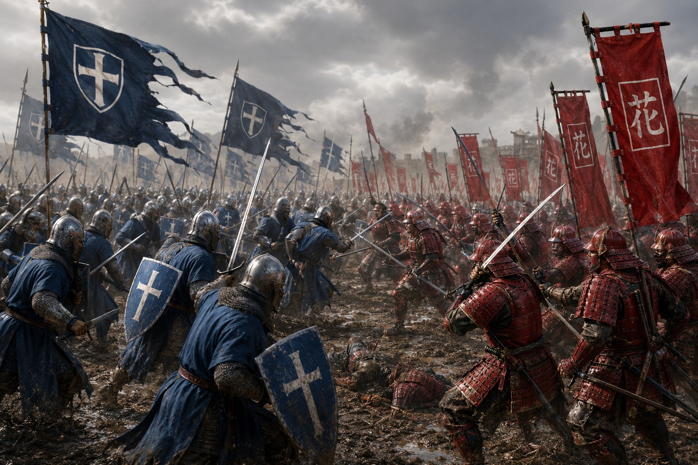
Sous Garrion, une expédition de Shintai occupa plusieurs îles que Vanloria considérait comme siennes. Les négociations échouèrent et l’attaque d’un convoi de ravitaillement déclencha une guerre navale, puis terrestre.
Les lourdes forces vanloriennes se heurtèrent aux bâtiments rapides, aux embuscades et à la discipline des guerriers shintaniens. Au Col Gris, une petite garnison de Shintai retint une armée supérieure jusqu’à l’arrivée de renforts.
Épuisés, les deux royaumes signèrent la paix sur une île neutre. Les territoires furent partagés et certaines îles devinrent des zones commerciales indépendantes, sans effacer la méfiance née de la guerre.
La disparition de navires marchands près des eaux de Nerethis déclencha une grave crise. Vanloria accusait les pirates, tandis que l’Enclave dénonçait les ambitions maritimes de la Couronne.
Après plusieurs incidents, des diplomates indépendants obtinrent un accord réaffirmant les frontières et la sécurité du commerce. La guerre fut évitée, mais la méfiance persista pendant des années.
Des pirates installés dans les îles et les criques du Sud paralysaient les routes commerciales. La Couronne rassembla une flotte, détruisit leurs principaux repaires et captura ou dispersa leurs chefs.
Une marine permanente fut créée pour escorter les convois. La sécurité retrouvée des mers permit au commerce vanlorien de prospérer pendant plusieurs générations.
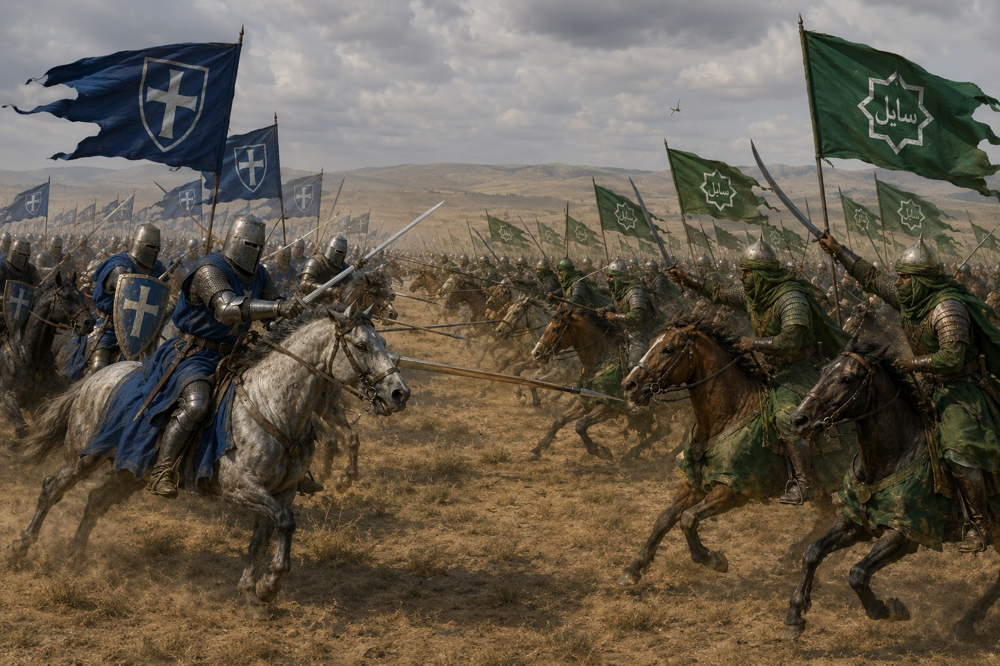
L’attaque d’une caravane asharienne près de la frontière fut attribuée à des seigneurs vanloriens. Asharun lança une offensive rapide contre les forteresses orientales tandis que la Couronne mobilisait ses chevaliers.
Charges lourdes et archers montés s’affrontèrent jusqu’à la bataille indécise des Dunes Rouges. Des années de guerre ruinèrent les bastions de Vanloria et les routes commerciales d’Asharun.
Au Traité de Solkar, des preuves révélèrent que l’embuscade avait été organisée par des mercenaires désireux de profiter du conflit. Les échanges furent rétablis, mais des milliers de vies avaient été perdues à cause d’un mensonge.
Une immense armée tenta de traverser les montagnes du Nord avant que Vanloria ne puisse se préparer. Les chevaliers choisirent de l’attendre dans un passage étroit, constamment recouvert de neige.
Le terrain annula la supériorité numérique de l’envahisseur. Après plusieurs jours de combats sous le blizzard, l’armée étrangère, épuisée, dut se retirer. La frontière nord fut sécurisée pour des décennies.
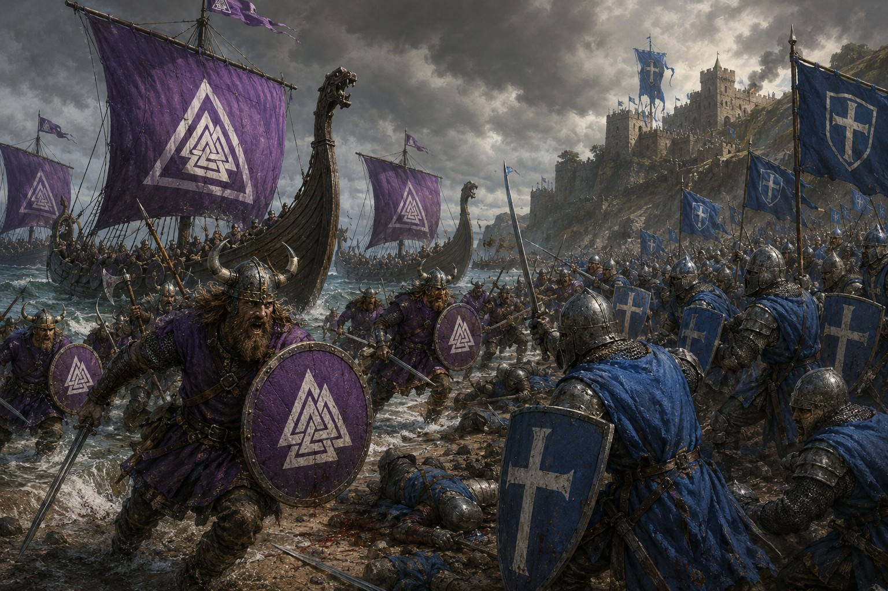
Les guerriers de Falkheim descendirent des mers glacées à bord de drakkars aux voiles violettes. Dans le brouillard et la neige, ils assaillirent le fort d’Ysmark, position qui protégeait l’entrée du fjord.
Les archers et soldats vanloriens tinrent les murailles jusqu’à repousser l’invasion. Impressionnée par la valeur des survivants nordiques, la Couronne proposa à plusieurs d’entre eux de servir comme mercenaires, forgeant une alliance inattendue entre anciens ennemis.
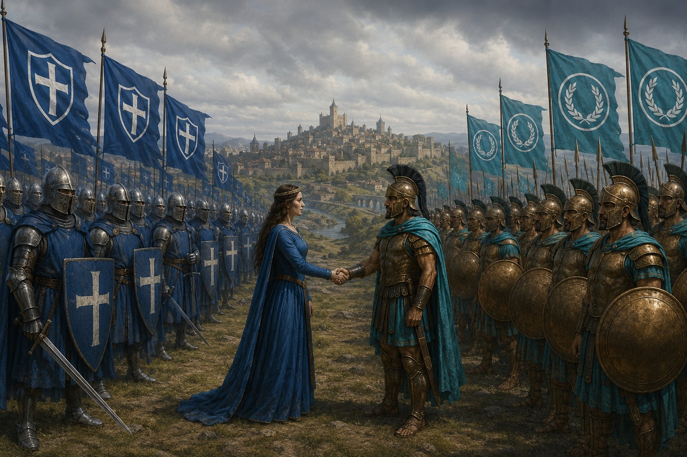
Après des années de guerre et de famine, la reine Elyria rechercha une paix durable. Elle négocia avec Erythros un traité garantissant l’ouverture des routes, la protection mutuelle des marchands et l’entraide militaire.
Marbre, épices, vin et savoirs affluèrent vers Vanloria ; acier, chevaux et récoltes prirent le chemin inverse. Les villes s’enrichirent, les académies et bibliothèques se multiplièrent, et les artistes voyagèrent librement entre les deux nations.
L’Alliance Dorée demeure l’un des plus grands succès diplomatiques de la Couronne et le symbole d’une prospérité obtenue par la coopération plutôt que par la conquête.
Lorsque les ambassadeurs de Shintai revinrent à Vanloria, les tensions entre soldats orientaux et chevaliers occidentaux menaçaient la paix. Un duel cérémoniel fut organisé dans les jardins de Kaedorin.
Sous les pétales rouges des cerisiers, Hayato Ren et Rodric de Talemont s’affrontèrent avec une maîtrise égale. Aucun vainqueur ne fut proclamé, mais le respect né entre eux transforma la rivalité en alliance durable.
Famines, pestes, révoltes et trahisons éprouvent l’idéal vanlorien. Le royaume survit, mais chaque victoire laisse une cicatrice.
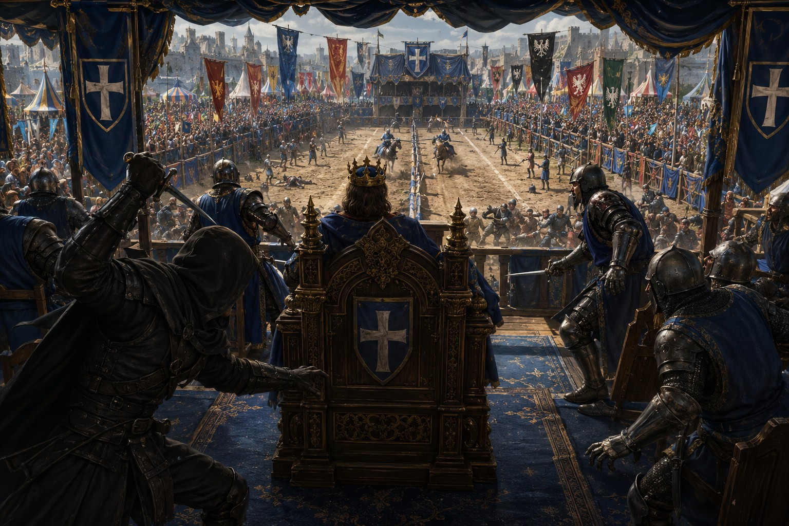
Pendant les Grandes Joutes d’Aureval, des assassins infiltrés parmi les chevaliers et les serviteurs tentèrent de tuer Théodran III. Un jeune Paladin remarqua leur comportement et alerta la garde quelques instants avant l’attaque.
Le complot échoua, mais la secte avait des soutiens parmi les nobles, les marchands et les officiers. Après des années d’enquête et plusieurs assassinats, ses derniers chefs furent capturés dans les catacombes d’Astraviel puis exécutés.
Une comète rouge resta visible plusieurs semaines au-dessus du royaume. Les prêtres annoncèrent de grands malheurs, les astrologues une ère nouvelle et des mouvements religieux proclamèrent l’approche de la fin du monde.
Les tempêtes et les mauvaises récoltes qui suivirent renforcèrent la peur. Même bien plus tard, la comète resta l’un des présages les plus troublants des chroniques vanloriennes.
Armond contesta la légitimité de son frère Edric III et rallia les maisons nobles hostiles aux taxes de guerre. Vanloria se divisa entre fidèles de la Couronne et partisans du prince rebelle.
Forteresses, villes et familles changèrent de camp au fil de plusieurs années de guerre civile. Edric finit par vaincre son frère, mais le royaume sortit profondément affaibli par ce conflit entre son propre sang.
Après plusieurs hivers trop longs et des récoltes détruites par les pluies noires, les villages se vidèrent et les routes devinrent dangereuses. La Couronne ouvrit ses réserves et mobilisa Chevaliers et Paladins pour escorter la nourriture.
Des émeutes éclatèrent néanmoins, tandis que certains seigneurs profitaient du chaos. La tragédie poussa Vanloria à construire d’immenses greniers royaux pour qu’une telle pénurie ne puisse plus jamais menacer tout le royaume.
Un navire marchand accosta à Argélion avec un équipage gravement malade. Fièvres, douleurs et marques noires se répandirent rapidement le long des routes commerciales, vidant villages et quartiers entiers.
La Couronne ferma des villes et imposa des quarantaines, tandis que prêtres et médecins cherchaient une explication. La peste disparut aussi brutalement qu’elle était apparue, laissant des milliers de morts et un royaume durablement traumatisé.
Taxes excessives et tensions diplomatiques fermèrent les routes du Sud. Épices, soieries et verre précieux cessèrent d’arriver à Vanloria, tandis que le boycott vanlorien affaiblissait les ports marchands d’Asharun.
Après plusieurs années de pertes, un nouvel accord rouvrit les Routes d’Or et stabilisa l’économie des deux puissances.
Réveillé dans les montagnes volcaniques de Mordrak, Varkhor incendia villages, forêts et forteresses. Alaric II envoya une armée menée par Ser Kaedor, le Lion d’Acier, jusqu’à la vallée d’Irkareth.
Dans un ciel rougi par le feu, Kaedor planta son épée bénie dans le cœur du dragon. Une grande partie de l’armée périt et le chevalier succomba peu après à ses blessures. Varkhor entra dans la mémoire comme le dernier des Grands Dragons.
Unifiée par Harald Brise-Fer, la Horde de Falkheim débarqua pour conquérir, non plus simplement piller. Des centaines de drakkars attaquèrent les ports tandis que guerriers et Berserkers progressaient vers l’intérieur.
À Valecendre, les murs de boucliers du Nord brisèrent plusieurs charges vanloriennes. La Couronne adopta alors une guerre d’usure, frappant les convois et refusant les batailles ouvertes.
Le siège de Fort-Aurélia arrêta finalement l’invasion. Les renforts royaux forcèrent les survivants à regagner leurs navires sous les tempêtes hivernales, laissant derrière eux des terres ravagées et le souvenir des voiles violettes dans le brouillard.
La plus grande bibliothèque du continent brûla au cœur d’un hiver. Cartes, récits de guerre et ouvrages anciens disparurent malgré les efforts des gardes et des habitants.
L’origine de l’incendie ne fut jamais établie : extrémistes hostiles à la Couronne ou expérience alchimique interdite. Dans les deux cas, des siècles de connaissances furent perdus à jamais.
Après de nouvelles taxes et des quotas imposés pour financer les guerres, les mineurs de Karadorn prirent le contrôle de plusieurs cités. Avec leurs outils, marteaux et explosifs, ils repoussèrent les premières garnisons.
La Couronne écrasa finalement la révolte, mais reconnut que les abus des nobles l’avaient provoquée. Les conditions de travail furent améliorées afin d’éviter un nouveau soulèvement.
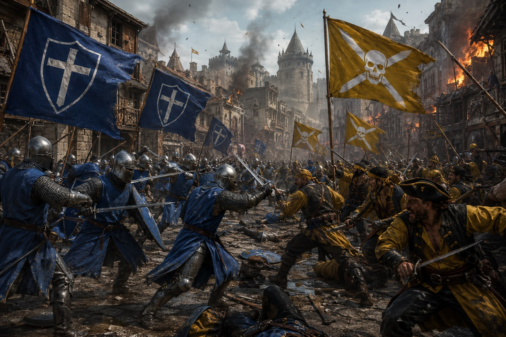
Le duc Edric Valemort rallia des barons hostiles au renforcement de l’autorité royale. Dans l’ombre, il conclut une alliance avec Nerethis et promit aux pirates or, ports et privilèges commerciaux.
La guerre civile éclata sur terre et sur mer. Les exactions des pirates retournèrent toutefois la population et certains rebelles contre Valemort. À Valecroix, les forces royales encerclèrent puis brisèrent son armée.
Capturé alors qu’il tentait de fuir, Valemort fut exilé avec les derniers insurgés. Pour les uns, il resta un traître ; pour d’autres, le dernier seigneur à avoir osé défier la centralisation de la Couronne.
Un séisme ouvrit les profondeurs des montagnes noires. Des villages disparurent et des survivants décrivirent des bêtes écailleuses aux yeux rouges, ainsi que des silhouettes presque humaines dont les griffes déchiraient l’acier.
Routes et fortins furent abandonnés. Même les chevaliers eurent du mal à contenir les attaques, sans savoir combien de créatures dormaient encore sous la roche ni ce qui les avait réellement réveillées.
Les présages deviennent catastrophe. Aureval livre une dernière bataille contre un ennemi qui ne respecte aucune loi du monde connu.
Alaric III monta sur le trône pendant une période prospère. Pourtant, cultes secrets, éclipses rouges, étoiles disparues et ambitions nobiliaires annonçaient un danger grandissant.
Une tentative d’assassinat dans la cathédrale solaire d’Astraviel révéla un complot impliquant trois barons. Les coupables furent exécutés, mais tremblements de terre, tempêtes et récoltes mourantes convainquirent le roi qu’un mal plus vaste approchait.
Il renforça les murailles, mobilisa les armées et demanda aux temples de prier. Au fond de lui, il savait déjà qu’aucun souverain ne pouvait empêcher la fin.
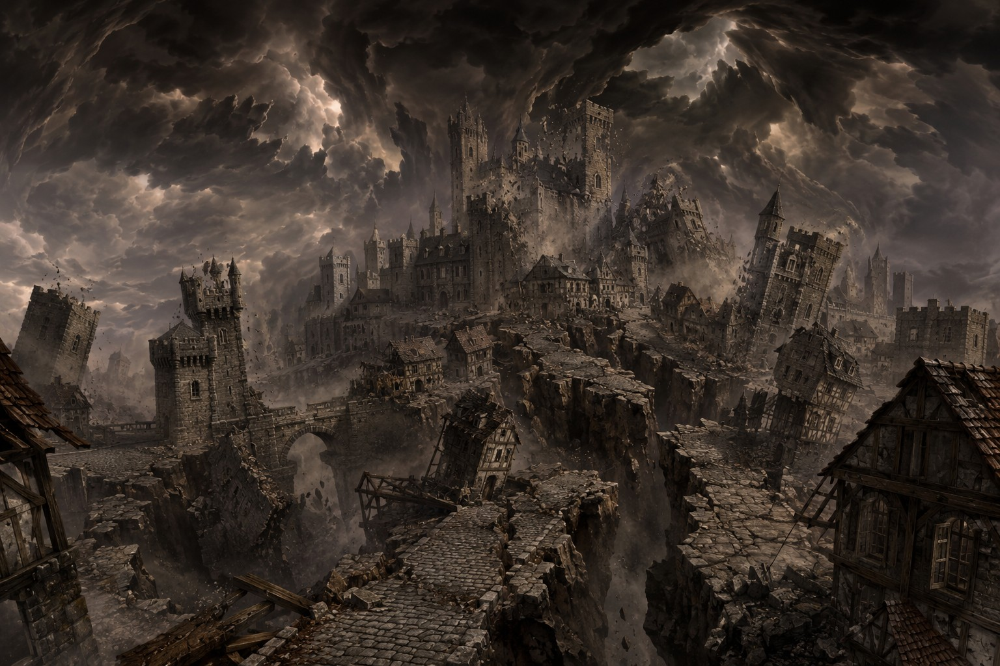
Par une nuit d’hiver, un rugissement venu des profondeurs secoua le royaume. Des éclairs écarlates déchirèrent le ciel, les montagnes se fissurèrent et les cloches d’Aureval sonnèrent l’alerte.
Une lueur violette apparut sur les plaines. De cette brume émergèrent des êtres faits de vent, de poussière et d’énergie tourbillonnante. Leurs silhouettes changeaient sans cesse et leurs attaques arrachaient toits, arbres et vies humaines avec la force d’une tempête.
Les chevaliers prirent les armes. Alaric comprit que ce n’était plus la fin d’un âge, mais le début d’une guerre pour la survie de l’humanité.
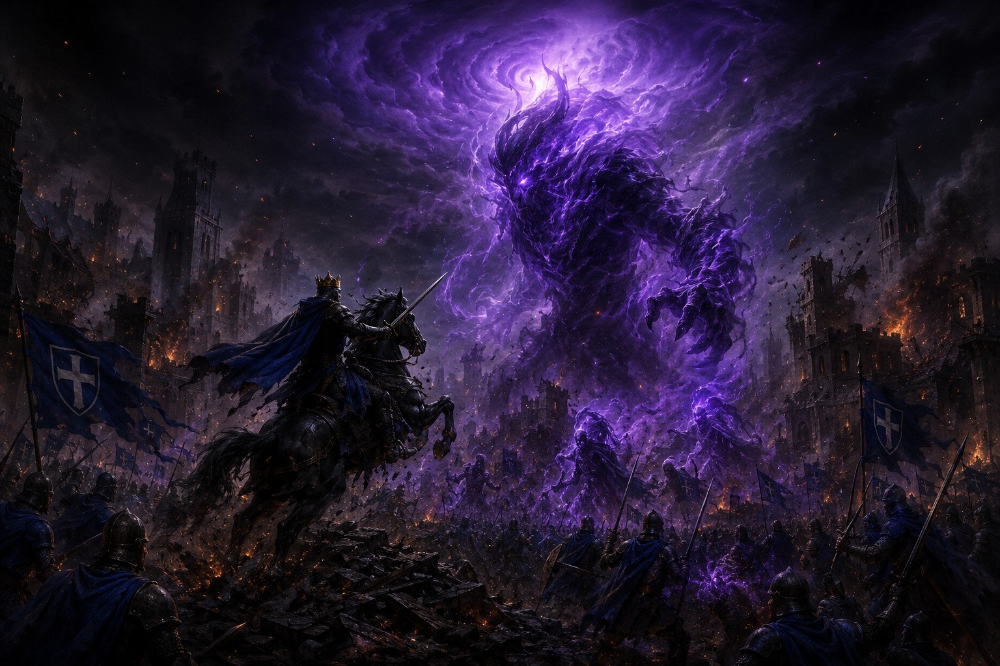
À l’aube, la capitale brûlait. Alaric combattait sur la place du Trône tandis que soldats et civils défendaient les ruelles, les marchés et le temple solaire. Les lames dispersaient les monstres sans parvenir à les détruire.
Soudain, toutes les créatures s’immobilisèrent et s’agenouillèrent. Une faille violette déchira l’espace devant le palais. Un géant de tempête, plus haut que les tours, en émergea et balaya des bâtiments d’un simple geste.
Pour la première fois depuis le début de la catastrophe, le roi sentit la peur. Il resta pourtant debout devant ce qui venait réclamer sa cité.
Au milieu des ruines, Alaric enfourcha son cheval et s’avança seul. Il chargea le géant malgré les rafales, frappa son corps tourbillonnant et provoqua une décharge violette qui illumina toute la ville.
La créature n’était pas blessée. Le roi chargea une seconde fois. Une explosion de vent et d’énergie l’engloutit, puis la réalité elle-même se déchira. Les cieux s’effondrèrent, les océans s’évaporèrent et Vanloria disparut dans une lumière aveuglante.
« Les royaumes peuvent tomber. Le devoir, lui, ne s’achève qu’au dernier souffle. »
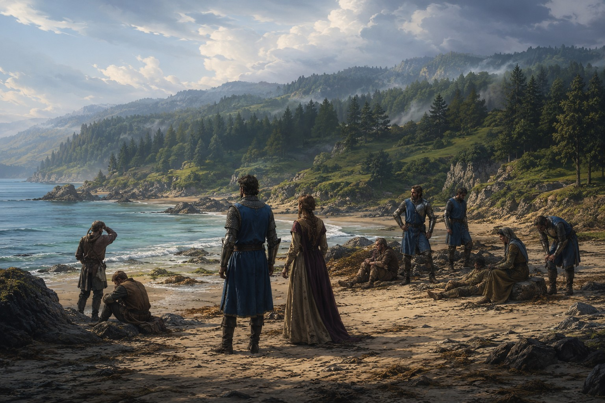
Vanloria avait résisté aux invasions, aux trahisons et aux rébellions. Il ne pouvait pas résister à un ennemi qui brisait les lois du monde. Forteresses, routes et cités furent englouties avec l’ancien continent.
Lorsque les survivants rouvrirent les yeux, ils se trouvaient sur une plage inconnue. Derrière eux s’étendaient des terres étrangères ; devant eux, une mer calme et un horizon absent de toutes leurs cartes.
Personne ne savait comment ils étaient arrivés là. Mais pour la première fois depuis longtemps, il n’y avait ni tempête ni guerre. Peut-être était-ce un miracle, une énigme ou simplement le commencement d’une nouvelle histoire.
Le début d’un nouvel âge
Sur une plage inconnue, les survivants ont retrouvé une mer calme et un horizon absent de toutes leurs cartes. À eux désormais de décider si la Couronne renaîtra à l’identique ou si l’honneur, la loyauté et le sacrifice prendront une forme nouvelle.